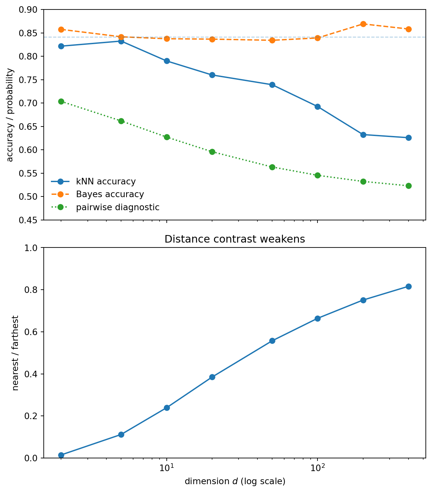
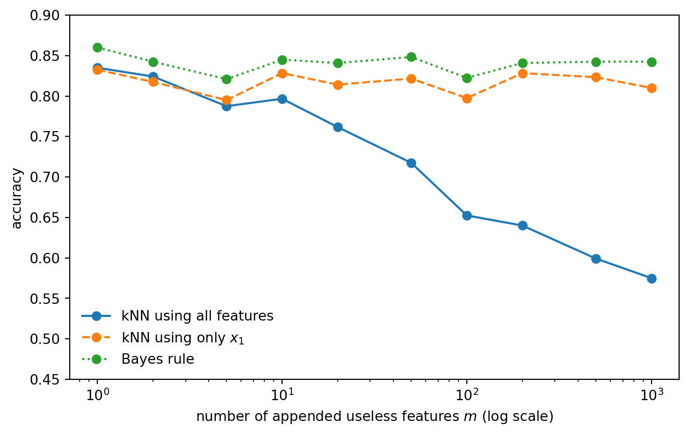
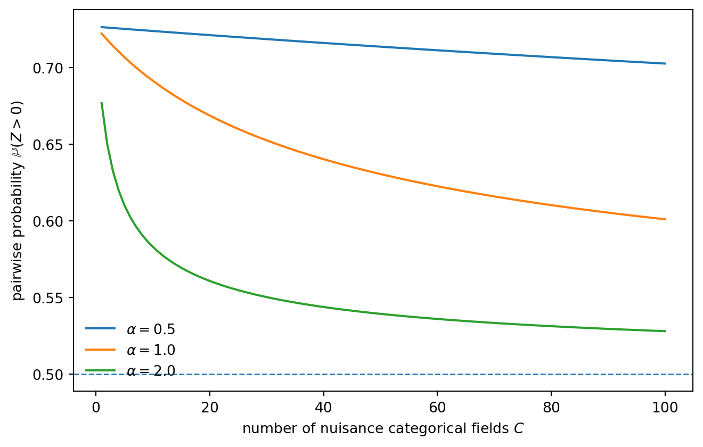

2026-05-01
Nearest-neighbor methods are attractive because the rule is almost embarrassingly simple: find points close to the query, and let those points decide. The weakness is hidden in the word close. A nearest-neighbor method is only as good as the geometry induced by its representation and metric.
This note studies a deliberately small example. There is one informative coordinate and many nuisance coordinates. The Bayes rule does not change as dimension grows, because it only needs the informative coordinate. Euclidean kNN, however, uses all coordinates equally. As nuisance coordinates accumulate, distance rankings become less related to the label.
The same issue appears in retrieval systems. A retrieval-augmented generation system embeds a query and a collection of document chunks, then retrieves nearby chunks. If the representation makes the right passages close, the language model receives useful context. If irrelevant variation shapes the neighborhood, the model receives plausible but unhelpful context.
The goal is not to prove a theorem about RAG. The goal is to make a diagnostic picture: nearest-neighbor retrieval works only when distance means relevance.
I will call this the relevance gap: the gap between being close under the retrieval metric and being useful for the task. In the toy model, the gap appears because Euclidean distance listens to nuisance coordinates. In retrieval systems, it appears when embedding similarity retrieves passages that are topically plausible but not actually answer-bearing.
Let
Y\sim \mathrm{Bernoulli}(1/2), \qquad Y\in\{0,1\}.
Conditional on the label, generate
X\mid Y=y \sim N_d\big((2y-1)\mu e_1,I_d\big),
where
e_1=(1,0,\ldots,0)\in\mathbb{R}^d.
Only the first coordinate is informative. The remaining d-1 coordinates are independent noise. With equal priors and common covariance, the Bayes classifier is
h^*(x)=\mathbf{1}\{x_1\ge0\}.
Its accuracy is
\mathbb{P}\{h^*(X)=Y\}=\Phi(\mu),
which is independent of d. So the classification problem itself does not become harder as dimension grows. The signal is still there, in the same coordinate, with the same strength.
Euclidean kNN uses a different geometry. It compares a query x with a training point x' using
\|x-x'\|_2^2 = (x_1-x_1')^2+\sum_{j=2}^d (x_j-x_j')^2.
The informative coordinate contributes one term. The nuisance coordinates contribute d-1 terms. As d grows, most of the distance comes from coordinates that contain no label information.
A compact way to see the problem is to compare two candidate neighbors for a query point: one from the same class and one from the opposite class. Define
Z = \|x-X^{(o)}\|_2^2 - \|x-X^{(s)}\|_2^2,
where X^{(s)} is a same-class candidate and X^{(o)} is an opposite-class candidate. If Z>0, the same-class point is closer.
In this Gaussian model,
\mathbb{E}[Z]=4\mu^2, \qquad \operatorname{Var}(Z)=12d+32\mu^2.
The mean advantage of the same-class point is fixed. The variance of the distance comparison grows linearly with dimension. A normal approximation therefore gives
\mathbb{P}(Z>0) \approx \Phi\left( \frac{4\mu^2}{\sqrt{12d+32\mu^2}} \right) = \Phi\left( \frac{2\mu^2}{\sqrt{3d+8\mu^2}} \right).
As d\to\infty, this probability tends to 1/2. Pairwise distance ordering becomes nearly label-agnostic, even though the Bayes rule is unchanged.
This is the mathematical core of the toy example: the signal in the distance comparison stays fixed, but the nuisance fluctuation grows.
We now simulate exact Euclidean kNN. The Bayes classifier uses only x_1. The kNN classifier uses all coordinates.

The upper panel separates the statistical problem from the metric problem. The Bayes accuracy stays stable because the decision boundary is still x_1=0. Euclidean kNN degrades because it uses a distance in which many irrelevant coordinates contribute.
The lower panel shows a crude distance-concentration diagnostic. As the nearest and farthest distances become less contrasted, the neighborhood becomes less meaningful. This ratio is not a theorem about kNN accuracy, but it tracks the geometry that is causing the failure.
A natural objection is that nobody intentionally adds independent Gaussian noise features. But nuisance variation enters real datasets in less obvious ways: irrelevant engineered features, broad metadata, repeated boilerplate, weak proxies, and representation dimensions that are not useful for the specific task.
To isolate the effect, start with the same one-dimensional signal and append m useless coordinates. We compare three rules:

The oracle one-dimensional kNN is the important comparison. It shows that the deterioration is not caused by a harder classification boundary. The boundary is unchanged. What changes is the geometry used by the nearest-neighbor rule.
The signal is still present. The metric is simply listening to too many irrelevant directions.
The independent Gaussian nuisance model is useful because the algebra is clean. But it is not the only way nuisance features appear. In tabular data, nuisance often enters through one-hot encoded categorical variables.
One-hot encoding has different geometry. A categorical field with m levels becomes m coordinates, but those coordinates are dependent: exactly one entry is equal to one. So the raw one-hot dimension is not the right effective nuisance dimension.
Suppose we append C independent categorical fields. Each field has level probabilities
p=(p_1,\ldots,p_m).
Let
q = \mathbb{P}\{Z\ne Z'\} = 1-\sum_{\ell=1}^m p_\ell^2
be the mismatch probability between two independent draws from one categorical field. If the one-hot block is scaled by \alpha, then one categorical field contributes either 0 or 2\alpha^2 to squared Euclidean distance.
In the same pairwise diagnostic as before, the one-hot nuisance contributes mean zero and variance
\operatorname{Var}(Z_{\text{one-hot}}) = 8\alpha^4 Cq(1-q).
Including the signal coordinate gives
\operatorname{Var}(Z) = 12+32\mu^2+8\alpha^4 Cq(1-q), \qquad \mathbb{E}[Z]=4\mu^2.
This is the useful caveat. One-hot nuisance does not behave like Cm independent Gaussian noise coordinates. The danger is controlled more by the number of categorical fields C, the scaling \alpha, and the mismatch variance q(1-q).

The message is more nuanced than “high dimension is bad.” A single high-cardinality one-hot column need not act like thousands of independent noise coordinates. But many categorical fields, poor scaling, skewed levels, or missingness patterns can still make Euclidean neighborhoods noisy.
This distinction is useful in practice. If kNN or retrieval fails, the issue may not be ambient dimension itself. It may be the effective geometry induced by preprocessing and feature weighting.
A retrieval-augmented generation system usually begins with nearest-neighbor search. A query is embedded into a vector space, document chunks are embedded into the same space, and the system retrieves chunks that are close to the query under cosine similarity, inner product, or another score.
Cosine similarity does not change the point of the note. If embeddings are normalized, cosine similarity and Euclidean distance induce the same nearest-neighbor ranking, since
\|u-v\|^2 = 2 - 2\langle u,v\rangle
whenever \|u\|=\|v\|=1. If embeddings are not normalized, cosine removes variation in vector length, but it still depends on the direction of the vector. Irrelevant directional variation can still dominate the neighborhood. Thus the relevance gap is not specifically a Euclidean problem; it is a metric-alignment problem.
The analogy is:
| kNN experiment | Retrieval system |
|---|---|
| query point | user query embedding |
| training points | document chunk embeddings |
| class label | answer relevance |
| informative coordinate | semantic feature needed for the question |
| nuisance coordinates | irrelevant representational variation |
| nearest neighbors | retrieved chunks |
| wrong-class neighbors | irrelevant or misleading context |
This gives a useful picture of a common retrieval failure. The correct passage may exist in the corpus, but if the retriever’s geometry is shaped by irrelevant variation, that passage may not be ranked highly. The generation model then receives a local neighborhood that is topically plausible but not answer-bearing.
The oracle one-dimensional kNN in the toy experiment corresponds to a better retrieval metric: one that ignores nuisance variation and emphasizes the feature that matters for the question. In practical RAG systems, the analogues are better chunking, metadata filters, query rewriting, hybrid lexical–dense retrieval, domain-specific embeddings, and rerankers.
The claim is not that dense embeddings are bad because they are high-dimensional. Learned embeddings are useful precisely because they try to organize semantic structure. The narrower lesson is that retrieval quality depends on alignment between the representation, the similarity measure, and the user’s query.
This is the retrieval version of the same relevance gap. The correct passage may exist in the corpus, but the metric may rank nearby passages according to the wrong kind of similarity. The retrieved chunks are close in embedding space, but not relevant in the sense needed by the query.
Nearest-neighbor methods fail when closeness stops meaning relevance. In the toy model, closeness is corrupted by independent nuisance coordinates. In one-hot tabular data, the story is more subtle: raw ambient dimension is not the whole issue, but fields, scaling, and mismatch variance can still distort Euclidean neighborhoods. In retrieval systems, analogous nuisance variation can make the top-ranked chunks plausible but not answer-bearing.
The practical question is the same in all three settings:
Does the retrieval geometry make the right objects close?
More precisely: does closeness track relevance? When those two notions separate, a relevance gap opens. The local neighborhood may look plausible, but it is no longer the right neighborhood for the task.
If the answer is no, increasing the sophistication of the downstream model may not fix the problem. The error has already entered through the retrieved neighborhood.
Write
Z=\sum_{j=1}^d Z_j, \qquad Z_j=(x_j-X_j^{(o)})^2-(x_j-X_j^{(s)})^2.
The coordinates are independent, so means and variances add. For j\ge2, the query coordinate, same-class coordinate, and opposite-class coordinate are all independent N(0,1). Direct expansion gives
\mathbb{E}[Z_j]=0, \qquad \operatorname{Var}(Z_j)=12.
For the first coordinate, conditional on the query class,
x_1,X_1^{(s)}\sim N(\mu,1), \qquad X_1^{(o)}\sim N(-\mu,1),
up to the symmetric case with signs reversed. Direct expansion gives
\mathbb{E}[Z_1]=4\mu^2, \qquad \operatorname{Var}(Z_1)=12+32\mu^2.
Therefore
\mathbb{E}[Z]=4\mu^2, \qquad \operatorname{Var}(Z) = (d-1)\cdot12+(12+32\mu^2) = 12d+32\mu^2.
This is the source of the diagnostic in Part II.
For one categorical field, let
M=\mathbf{1}\{Z\ne Z'\}
be the mismatch indicator between two independent draws. Then
\mathbb{P}(M=1)=q, \qquad \operatorname{Var}(M)=q(1-q).
With scaling \alpha, the squared-distance contribution of one field is
2\alpha^2M.
In the pairwise diagnostic, one field contributes
2\alpha^2(M_o-M_s),
where M_o and M_s are independent Bernoulli(q) variables. Hence
\operatorname{Var}(M_o-M_s) = 2q(1-q),
and the variance contribution per field is
(2\alpha^2)^2\cdot 2q(1-q) = 8\alpha^4q(1-q).
Summing over C independent categorical fields gives
\operatorname{Var}(Z_{\text{one-hot}}) = 8\alpha^4Cq(1-q).
Richard Bellman. Dynamic Programming. Princeton University Press, 1957.
Evelyn Fix and Joseph L. Hodges Jr. Discriminatory Analysis. Nonparametric Discrimination: Consistency Properties. USAF School of Aviation Medicine, 1951.
Thomas M. Cover and Peter E. Hart. “Nearest neighbor pattern classification.” IEEE Transactions on Information Theory 13(1), 1967.
Kevin Beyer, Jonathan Goldstein, Raghu Ramakrishnan, and Uri Shaft. “When is nearest neighbor meaningful?” Database Theory — ICDT ’99, 1999.
Charu C. Aggarwal, Alexander Hinneburg, and Daniel A. Keim. “On the surprising behavior of distance metrics in high dimensional space.” Database Theory — ICDT 2001, 2001.
Charles J. Stone. “Consistent nonparametric regression.” The Annals of Statistics 5(4), 1977.
Luc Devroye, László Györfi, and Gábor Lugosi. A Probabilistic Theory of Pattern Recognition. Springer, 1996.
Trevor Hastie, Robert Tibshirani, and Jerome Friedman. The Elements of Statistical Learning. Springer, 2nd edition, 2009.
Gérard Biau and Luc Devroye. Lectures on the Nearest Neighbor Method. Springer, 2015.